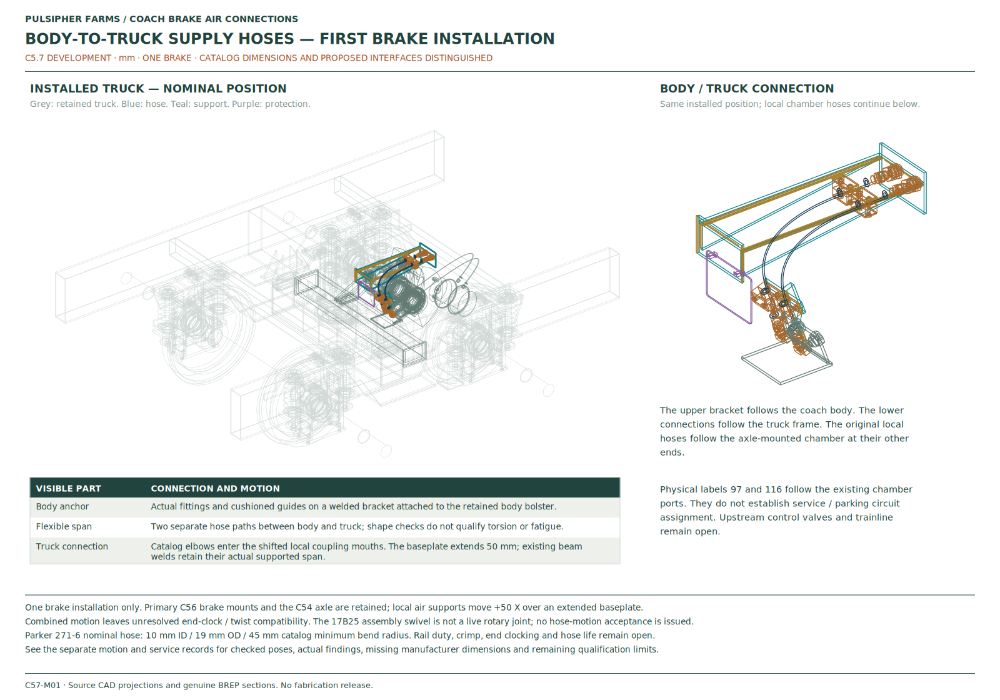
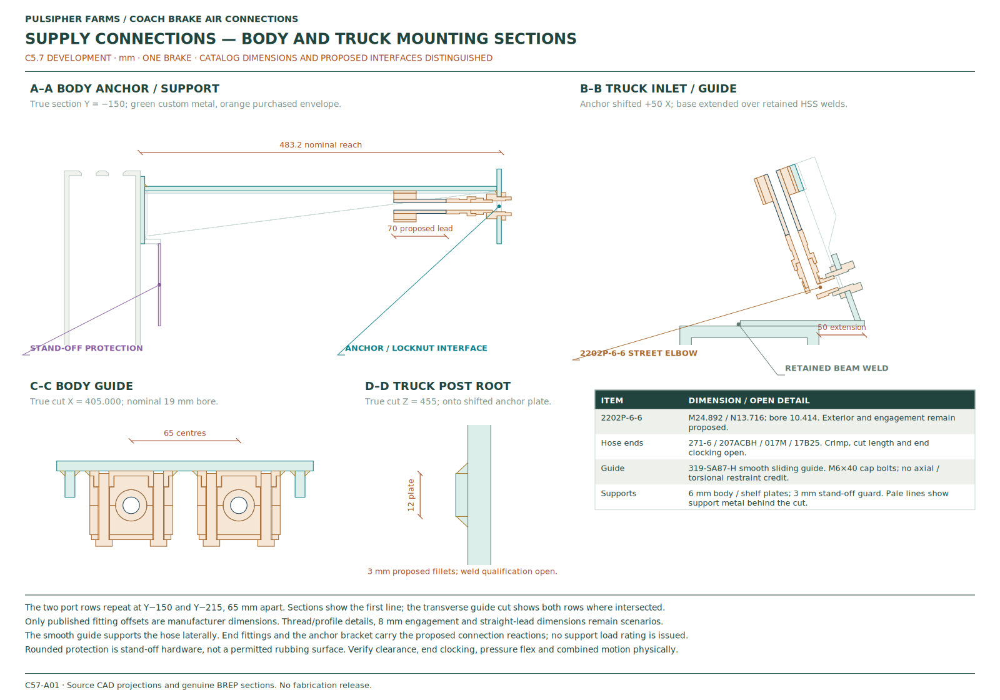
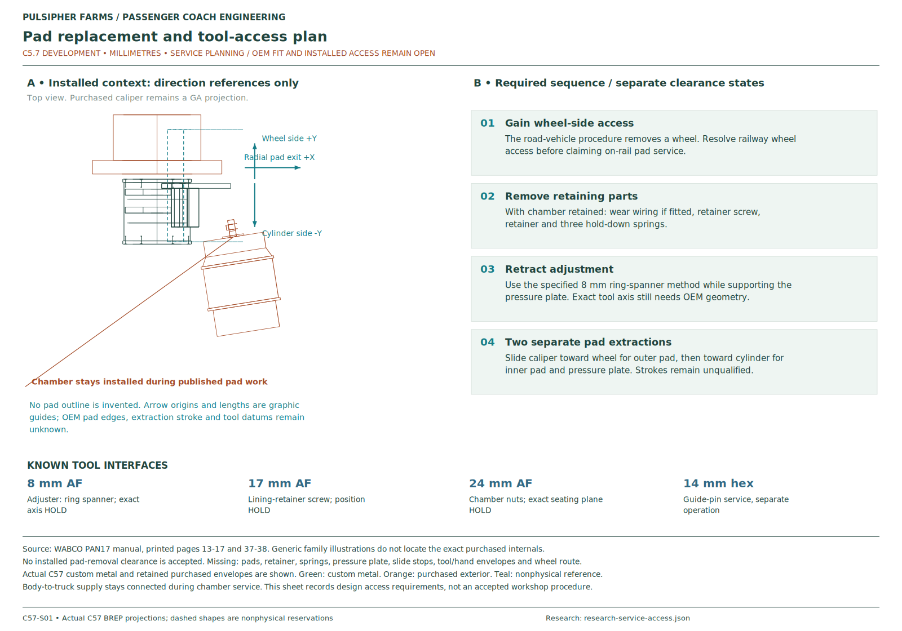
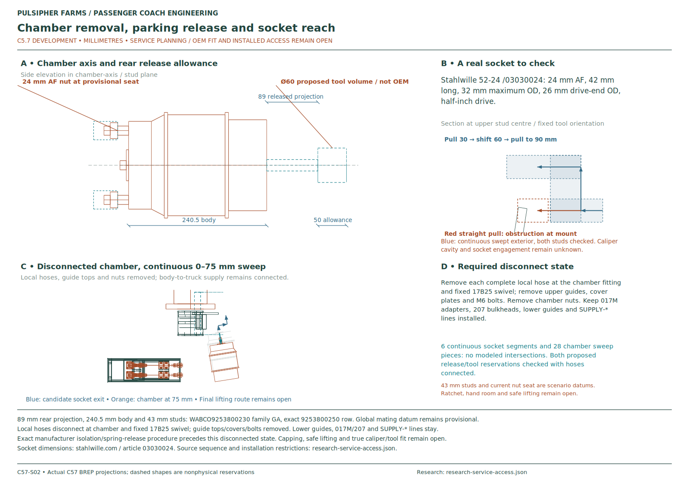
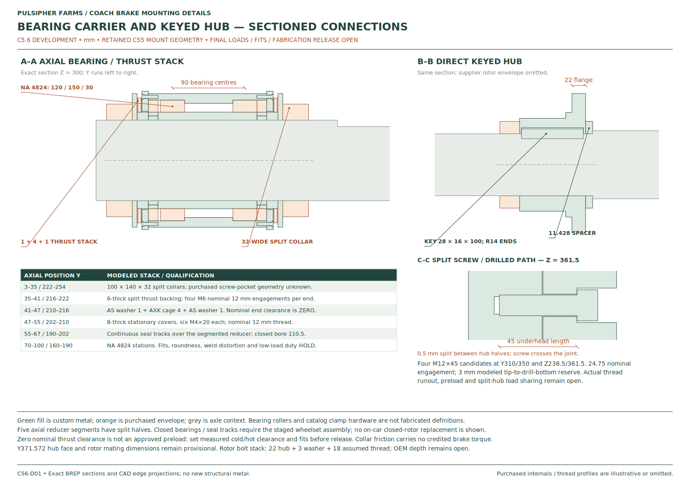
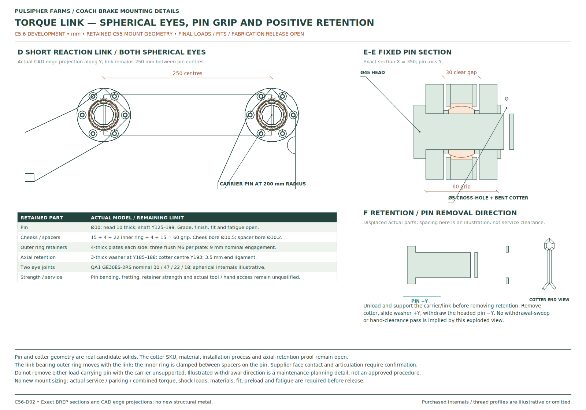
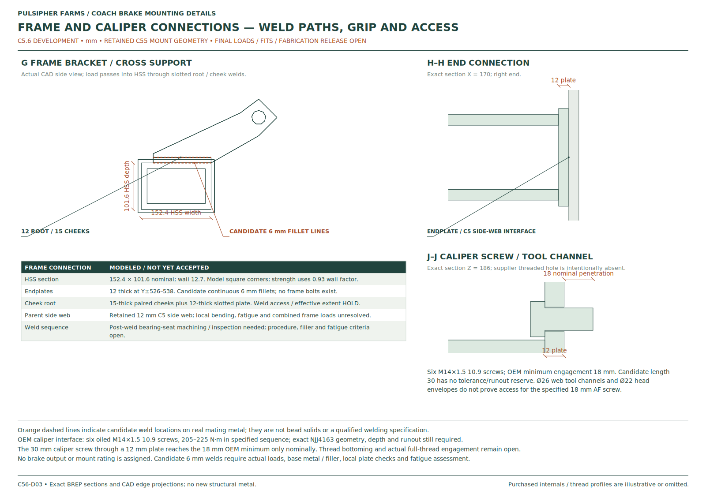

C5.7 · FIRST BRAKE INSTALLATION · 19 OCTOBER 2026
Body-to-truck air connection
Follow the supply hoses from the coach body to the turning truck, then through the local connections to the first brake. The drawings show the supports, fittings and maintenance-access paths.
Installed truckBrake close-upConnection drawingsEngineering evidence
Supply connection
Inspect the body and truck mounting points, flexible hoses, fittings and protection together.
Moving clearances
Review the hose arrangement through the stated turning, body-roll and suspension cases.
Maintenance access
See the proposed sideways socket exit and the connections removed for chamber access.
Exact supplier interfaces, service and parking port assignments, and maximum brake forces remain open. Webb and ZF requests have been sent. No reply was found at the 9:38 pm Pacific check on 19 October 2026.
Inspect the installed parts
This model contains one brake at axle 2, right side. The initial view includes the truck and its body connection. Select a close-up below or inspect individual parts inside the viewer.
Loading the installed truck…
Transparent purchased envelopes and hidden interface reservations retain their stated limitations. Showing a part in CAD does not confirm its fit or load capacity.
Air hardware shown
| Connection | Modeled candidate | Role in this layout |
|---|---|---|
| Flexible body connection | Parker 271-6 | Two supply paths between the coach body and the first brake’s truck connections |
| Supply direction change | Parker 2202P-6-6 | Threaded elbow; installed clocking and engagement remain provisional |
| Local flexible hose | Parker 271-6 | Paths from chamber to truck-mounted connections |
| Chamber hose end | Parker 10125-6-6B-VS | Exact installed thread engagement remains open |
| Hose disconnect | Parker 17B25-8-6B + 017M-6-8B | Swivel connection with adapter |
| Bulkhead connection | Parker 207ACBH-6 | Mounted through the fabricated anchor plate |
| Sliding hose guide | STAUFF 319-SA87-H | Smooth guide with cover, weld base and M6 fasteners |
The part records distinguish published dimensions from simplified profiles and proposed engagement. A sliding guide does not anchor the hose against axial movement or twist.
Connection and service drawings
The sheets use the modeled parts. Manufacturer dimensions, proposed fabrication dimensions and unresolved service clearances are identified on each drawing.


C57-M01Body-to-truck hoses installed in the truck

C57-A01Supply fittings, supports and hose protection

C57-S01Pad service and tool interfaces

C57-S02Chamber removal and parking-release accessRetained brake mounting details
The carrier bearings, keyed hub, torque link, retained pins and frame connections retain their C5.6 geometry. These sections remain the mounting reference while supplier loads and interfaces are unresolved.


C56-D01Bearing carrier and keyed hub

C56-D02Torque link, retained pins and washers

C56-D03Frame connections, welds and caliper screwsWhat remains to be confirmed
- Purchased package: rotor mounting geometry, matched chamber and caliper, maximum forces and exact fitting engagement.
- Air system: Port 97 and Port 116 identify physical stations. Circuit assignments, upstream controls, hose manufacture and full dynamic qualification remain open. The assembly swivels are not live rotary joints; combined movement still requires hose twist and fatigue validation.
- Service access: straight chamber-nut socket withdrawal meets the mount. The drawings show the proposed sideways exit and required disconnections. Actual caliper-seat, pad and tool clearances remain provisional where manufacturer dimensions are missing.
- Final mounts: bearing fits, hub and key load sharing, pin retention, welds and fatigue remain subject to the confirmed loads and connection checks.
Engineering record
The separate engineering record contains the component sources, movement and service checks, and their limits. Remaining brake locations will follow after this installation is accepted.
Open checks and evidenceView sent supplier requests
CAD and drawing downloads


Decompress gzip STEP files before CAD import and gzip SVG files before editing. These development drawings do not establish manufacturing tolerances or release fabrication.